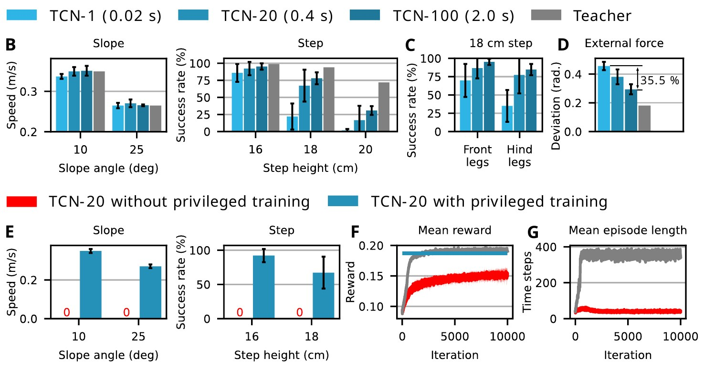
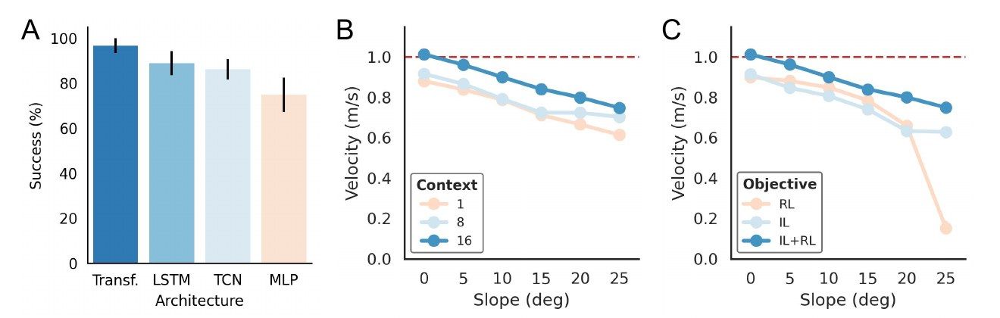
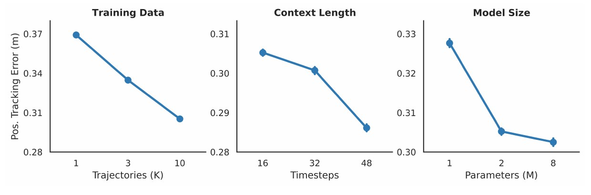

misc · 归档于 2026-11-02 · 专题
MLP vs Transformer
为什么机器人 RL 低层控制器大多用 MLP 而不是 Transformer？policy 什么时候需要历史，历史越长越好吗？
GOTT 页（running example）历史长度对照表Sources
归档到 misc：按要求放进 misc。最近的项目是 Sim-robot-learning（RL 低层控制器、sim-to-real、teacher-student）；也关系到 Robotic-harness 里"高层 transformer、低层 primitive"的分工。
TL;DR
- 问题
- 四足、人形、灵巧手的 RL 低层控制器几乎都是几层 MLP（GOTT：685 个数 → MLP → 32 维动作），而 ACT、Octo、OpenVLA、π0 这类模仿学习 / VLA policy 全是 transformer。差别从哪来？
- 答案
- 四个约束叠在一起：输入是几百维的定长向量，没有 token 可排；PPO 要几亿步交互（GOTT ≈491.5M 步），网络越便宜越好；大网络和 transformer 在 RL loss 下难训（GTrXL：DMLab-30 human-normalized 分数原版 TrXL 5.0，LSTM 99.3）；板上延迟紧（REAL：50 Hz 只有 20 ms，10 帧 transformer 要 23.07 ms）。
- 历史
- 看不见、又在变的量（质量、摩擦、地形、接触）要靠历史推：Dactyl 真机 LSTM 中位数 13 vs MLP 3.5，GOTT 去掉历史掉 15.7 点。但收益多在 0.5–3 s 内到顶（HORA 1.5 s 饱和，OmniH2O 0.5 s 最好，Li et al. 4 s 比 3 s 差）；长历史直接塞给 RL 反而崩（OmniH2O 47.11% vs 90.62%），多半靠 teacher 蒸馏才训得进去。
Problem
同一个 GOTT policy，为什么是 685 → MLP → 32，而不是一个 transformer？
Running example · 后面每一节都回到它
GOTT 的 contact-acquisition policy（GOTT 页，arXiv 2610.03861v2）：每 0.1 s 读入 o_t = 685 个数，过一个 MLP [512, 512, 256, 128]，输出 32 维动作（6 维 wrist 增量 + 26 维 canonical 关节增量），每步 0.752 ms（Table 14）。PPO（rl_games）在 IsaacLab 里训：4,096 env × 2,000 epoch ≈ 491.5M 步，单张 L40S 24 h。不进图像，物体位姿由 FoundationPose 在网络外估计。旁边还有一个 contact predictor：2 层 MLP（256），只看 5 步本体感觉，0.085 ms/步。
符号表 · o_t 里有什么（GOTT Table 8）
| 符号 / 块 | 它是什么 | 例子里的值 |
|---|---|---|
| o_t | policy 每一步看到的输入向量 | 685 个数（下面各块之和，总数是我们自己加的） |
| 手 → 物体向量 | 21 个手 link 各自到物体表面最近点的 3D 向量，只给当前帧 | 21 × 3 = 63 |
| 关节位置 | 26 个 canonical 关节的位置，最近 K 帧 | 26 × 5 = 130 |
| 上一步关节目标 | policy 上一步给每个关节的目标，最近 K 帧 | 26 × 5 = 130 |
| link 位置 | 21 个 link 的 3D 位置，最近 K 帧 | 21 × 3 × 5 = 315 |
| mask | 这只手上哪些关节 / link 槽位真实存在 | 26 + 21 = 47 |
| K | history length：叠几帧 | 5 帧，10 Hz 下是 0.5 s（换算） |
| a_t | 输出动作 | 32 维，10 Hz |
在这个例子上换掉一处，会坏在哪
flowchart LR IN["例子输入 o_t
685 个数，K = 5"]:::example IN --> A1["去掉历史
K = 1，只看当前帧"] A1 --> AX["丢了时间上的接触线索
78.7% → 63.0%"]:::gap IN --> B1["换重型 encoder
OHRA 式点云 encoder"] B1 --> BX["太大，没法和 PPO 一起训
换轻 PointNet：25.7%"]:::gap IN --> C1["换 transformer
GET-Zero 式跨手"] C1 --> CX["不直接用 PPO 训
先训 44 个 expert 再蒸馏"]:::gap IN --> D1["GOTT 的做法
K = 5 叠帧 + MLP"] D1 --> DX["一次 PPO，三只手一起训
78.7%，0.752 ms/步"]:::win
lane 1、2 是 GOTT 自己的消融（Table 4，§4.6.1）：K = 1 "removes temporal contact cues"；OHRA 的点云 encoder "too large to train jointly with PPO at our training scale"。lane 3 不是 GOTT 跑的：GOTT 只在 related work 里提到 GET-Zero，这里放的是 GET-Zero 自己的训练流程（见 Back to GOTT）。
范围：这页讲左边这一类 policy
flowchart LR R0["RL 低层控制器
GOTT、ANYmal、Digit"]:::example --> R1["输入
本体感觉 + 少量几何
几十到几百个数"] R1 --> R2["小 MLP
要历史时加叠帧 / TCN / GRU"] I0["IL / VLA policy
ACT、Octo、OpenVLA、π0"] --> I1["输入
多路图像 + 语言
大规模离线 demo"] I1 --> I2["Transformer
监督 loss"]
根本问题：RL 低层控制器卡在"样本量 × 训练稳定性 × 板上延迟"，不是表达能力；transformer 擅长的变长 token、海量离线数据、稳定的监督 loss，这里大多用不上。例外是历史：任务里有看不见、又在变的物理量时，policy 必须看一段过去，下面专门讲。（推断，综合下文各来源）
Why MLP
四个约束叠在一起，把 RL 低层控制器推向小 MLP
| 原因 | 在 GOTT 上 | 文献里的证据 |
|---|---|---|
| 1 · 输入短、定长 | 685 个数；26 关节 / 21 link 槽位固定，缺的用 mask 标；没有图像 |
|
| 2 · RL 要海量样本 | 4,096 env，≈491.5M 步，L40S 24 h |
|
| 3 · 大网络和 transformer 在 RL loss 下难训 | OHRA 式点云 encoder 太大，没法和 PPO 一起训；换轻 PointNet 后 25.7% |
|
| 4 · 板上延迟 | 10 Hz；policy 0.752 ms/步，contact predictor 0.085 ms/步 |
|
PPO 自己的经验也偏向小 MLP：Andrychowicz et al.（ICLR 2021）训了 250,000 个 agent。policy 和 value 都是两层隐层就够；policy 宽度要调，太窄太宽都会掉（HalfCheetah 上 16–32 个单元最好），value 可以宽（256）；把 policy 最后一层权重缩小 100×，Humanoid 就涨 66%。
对照：IL / VLA 为什么反过来全是 transformer
| Policy | 输入 · 规模 | 数据 · loss | 用多少历史 | 推理 |
|---|---|---|---|---|
| ACT RSS 2023 | 4 路 RGB + 14 维关节；≈80M 参数 | 每任务 50 条 demo（一个任务 100 条）；CVAE，L1 | 只看当前帧，作者说是为了避开 history-conditioned policy 的 causal confusion | ≈0.01 s（2080 Ti）；50 Hz，chunk k = 100 |
| Diffusion Policy RSS 2023 | 图像或状态；CNN 或 transformer backbone | 每个任务单独训；diffusion | To = 2；视觉 CNN 版 To 越长越差 | 0.1 s（3080，DDIM 10 步）；10 Hz 插值到 125 Hz |
| Octo RSS 2024 | 图像 + 语言或目标图；27M / 93M | 800k 条 OXE 轨迹，25 个数据集 | 2 帧（当前 + 1 帧历史）；再往前加，"significantly diminishing gains" | 论文未报告 |
| OpenVLA CoRL 2024 | 单张图 + 语言；7B | 970k episodes；action token cross-entropy | 无："only supports single-image observations" | ≈6 Hz（RTX 4090） |
| π0 RSS 2025 | 多路图 + 语言 + 本体感觉；3.3B | 10,000+ 小时；flow matching | 只用当前时刻（按论文的观测定义读出，论文没明说） | 73 ms（RTX 4090）；chunk H = 50 |
为什么反过来（推断）：图像和语言本来就是变长 token 序列；数据是固定的离线 demo，loss 是监督的（L1 / diffusion / cross-entropy），没有 RL 那种边训边变的目标；推理靠 action chunk 摊薄，不用每 20 ms 跑一次大网络。即便这样，Diffusion Policy 仍建议先试 CNN 版，因为 transformer "more sensitive to hyperparameters"。
History · 这页的重点
历史什么时候有用：看不见、在变、又能从过去推出来的量
- 为什么要历史：质量、摩擦、地形、接触、物体尺寸，一帧传感器看不到；domain randomization（DR）又让它们每个 episode 都变。"我发了什么指令、身体实际怎么动"的一段历史能把它们推出来，等于隐式 system identification。
- hidden state 里真有这些量：Dactyl 的 LSTM 交互 5 s 后，能 80% 判断方块比平均大还是小；魔方的探针从 LSTM 状态读 cube size 超过 80%（mass 只有 50–60%）；Cassie 的 LSTM 状态解码骨盆质心，用 DR 训的误差 1.77 mm，不用 DR 2.99 mm（Table IV）。
- 没东西可辨识时，历史没用：Dactyl 不做随机化时，FF 和 LSTM "converge to the same performance in the same amount of time"（fn. 8）。
五代做法 · 大致按时间 · 点节点展开
flowchart TD F["1 · 叠帧 + MLP
GOTT K = 5；Peng 8 步"] --> R["2 · LSTM / GRU
Dactyl、Cassie、ANYmal"] R --> T["3 · TCN / 1-D conv
Lee 2 s；RMA 0.5 s
HORA 1.5 s"] T --> X["4 · Transformer
Digit 16 步；NTP 48 步"] X --> M["5 · SSM（Mamba）
REAL：10 帧 13.14 ms"] click F href "#stage-stack" click R href "#stage-rnn" click T href "#stage-tcn" click X href "#stage-tf" click M href "#stage-tf"
点节点展开每一代的细节；带长度消融的例子都在下面的表里；长历史怎么"训进去"见 蒸馏是桥。
1 叠帧 + MLP（frame stacking） 最近 K 帧拼成一个更长的向量 → 同一个 MLP
- Why：最省事：网络结构不变，PPO 照常训，推理还是几次矩阵乘。
- 用在哪：GOTT K = 5；Peng 8 步；HIM、DreamWaQ H = 5；Humanoid-Gym actor 15 帧（100 Hz，0.15 s）、critic 3 帧；Walk These Ways 30 步；OmniH2O student 25 步。
- 短历史常常就够：Kyon 四足容错行走（PPO）：H 从 1 到 2 提升最大，再加"only marginal gains"，最后选 H = 3。
- 局限：输入维度随 K 线性涨，长了 PPO 训不动（HORA Table 4、OmniH2O）；对真机动力学的泛化不如 LSTM（Peng：真机 0.70 vs 0.89）。
Running example 在这一步
GOTT 的输入维度是 110 + 115 × K（63 + 47 个只给当前帧的数，加每帧 26 + 26 + 63 个历史量；式子是我们自己推的）：K = 5 时 685 个数，K = 30 就是 3,560 个。HORA 和 OmniH2O 的结果提示，这样直接加长、继续用 PPO 训，很可能更差（推断）。
2 LSTM / GRU（recurrent memory） 每步更新一个定长 hidden state → MLP head 出动作
- Why：hidden state 定长，理论上记得任意久；推理每步 O(1)。
- 赢的地方：Dactyl（真机中位数 13 vs 3.5）、Peng（真机 0.89 vs 0.67）、Cassie（DR 下 10/10 个 seed 走满 40 s）、ANYmal 野外（Miki：GRU belief encoder + attention gate，BC + 重建 loss）、Robot Parkour（GRU 86 / 80 / 100 / 73% vs 无记忆 MLP 0 / 1 / 63 / 43%）。
- 坑：BPTT 训得慢（Lee：TCN 的主要优势是训练"much faster"）；不做 DR 会过拟合仿真（Siekmann）；PPO 下 LSTM 吃的历史越长越差（HORA）；Li et al. 2024：recurrent policy "tend to converge to more suboptimal" 解；OmniH2O 真机上 LSTM 误差 87.00 mm，MLP + 25 步 47.94 mm。
flowchart LR OBS["当前观测
关节、IMU、上一步动作"] --> RNN["LSTM / GRU
hidden state 里存着
摩擦、质量的估计"] RNN --> HEAD["MLP head
动作"] RNN -.-> RNN
Running example 在这一步
GOTT 没用 RNN。它要判断的是接触建立了没有、手指滑没滑，这些 5 帧（0.5 s）内就看得出来：K = 1 → 5 涨 15.7 点（Table 4）。更长的记忆有没有用，论文没测。
3 TCN / 1-D conv（显式长度的历史编码器） N 步状态-动作序列 → 1-D 卷积 → latent → MLP policy
- Why：Lee 2020 的理由：能显式控制历史长度，吃得下长历史，对超参稳健。
- 几乎都不是 RL 直接训的：Lee 的 TCN student 用 DAgger 模仿 MLP teacher；RMA、HORA 的适配模块用监督回归去拟合 teacher 的 latent（extrinsics）。HORA 把 TCN 直接接进 PPO，只得到 random policy。
- 长度：Lee 100 步 = 2 s（50 Hz）；RMA 50 步 = 0.5 s；HORA 30 步 = 1.5 s；Li et al. 2024（Cassie，PPO）66 步 = 2 s，另有 4 步短历史直接进 MLP。
- 省延迟的招：RMA 让适配模块 10 Hz 慢跑、base policy 100 Hz 快跑，两者异步。
flowchart LR HIS["状态-动作历史
最近 50 步 = 0.5 s"] --> ADP["1-D CNN 适配模块
10 Hz，估 extrinsics ẑ"] ADP --> BASE["MLP base policy
100 Hz，当前状态 + ẑ"]
上图是 RMA 的部署方式（Fig. 2）。
Running example 在这一步
GOTT 的 contact predictor 是同一思路的小号版本：policy 训完后，单独用监督学习训一个只看 5 步本体感觉的小 MLP，判断"抓稳了没有"，再决定切到 move。
4–5 Transformer（和 SSM） 最近 L 步，每步一个 token → causal attention → 下一步动作
- Why：Radosavovic 的假设：观测-动作历史里有关于世界的信息，transformer 能在 context 里调整行为（in-context adaptation），不用改权重。
- Digit 上怎么训的：4 个 block、192 维、4 头，共 1.4M 参数，context 16；teacher 是看全状态的 MLP [512, 512, 256, 128]；loss = PPO + λ·KL(student ‖ teacher)，λ 一般在训练过半时退火到 0；4 张 A100、Isaac Gym。
- 别的训法：TERT、Barkour 用 BC / DAgger 从 RL 训好的 teacher 蒸馏；NTP 用离线 next-token 监督；HumanPlus 的 HST（50 Hz，context 8）和 LocoFormer 直接用 PPO。
- 代价：每步要对整个 context 做 attention：REAL 里 10 帧 transformer 23.07 ms，超过 20 ms 预算。
- SSM：REAL 换成 Mamba，每步 O(1)，13.14 ms。
flowchart LR TCH["MLP state teacher
看地形、摩擦等全状态"] --> JNT["PPO + λ·KL
λ 训练过半退火到 0"] JNT --> STU["Transformer student
1.4M 参数，context 16"]:::win
上图是 Radosavovic et al. 2024 的训练方式（Materials and Methods，Eq. 2）。
贯穿 2–5 蒸馏是桥：长历史怎么"训进去" RL 训一个看 privileged state 的 MLP teacher → 用监督信号教一个带历史的 student
flowchart LR TT["RL teacher
MLP + privileged state
地形、摩擦、接触"] --> SS["监督信号
动作、latent、KL"] SS --> UU["带历史的 student
TCN / GRU / transformer
只看本体感觉"]:::win
| 论文 | teacher | student · 历史 | 怎么教 |
|---|---|---|---|
| Lee 2020 | MLP，TRPO | TCN，2 s | DAgger，模仿动作 + latent |
| RMA 2021 / HORA 2022 | MLP base policy + 环境编码器，PPO | 1-D CNN，0.5 s / 1.5 s | 监督回归 extrinsics |
| Miki 2022 | MLP，PPO | GRU belief encoder | BC + 重建 privileged 信息 |
| OmniH2O 2024 | RL teacher | MLP，25 步叠帧 | DAgger |
| TERT 2023 / Barkour 2023 | RL teacher / RL specialist | Transformer，20 / 15 步 | BC + DAgger / BC |
| Radosavovic 2024 | MLP，PPO | Transformer，16 步 | PPO + KL，λ 退火到 0 |
| GET-Zero 2025 | 每只手一个 PPO expert | graph embodiment transformer | BC + self-modeling loss |
| NTP 2024 | RL policy、MPC、mocap、YouTube 轨迹 | Transformer，16–48 步 | 离线 next-token 预测 |
| ULT 2025 | teacher 和 student 放在同一个 transformer 里，RL + next state-action 预测 + 动作模仿一起训，只有一个阶段 | ||
- 为什么要绕这一步：Lee 2020 用 TRPO 直接训同一个 TCN-20：坡上速度 0、台阶成功率 0%（Fig. 5E）。OmniH2O 直接用 RL 训 25 步历史只有 47.11%（不带历史 90.62%），因为 "RL being unable to handle the exponential growth in input complexity"。
- 代价：先要有 teacher，再加一个甚至几个监督阶段，这正是 ULT 想省掉的。
Running example 在这一步
GOTT 只有一个 PPO 阶段、没有 teacher，所以历史停在 5 帧叠帧；它唯一的监督小网络是事后单独训的 contact predictor。
带长度 / 记忆消融的例子
按历史编码器分组。"读图"是从论文的图上读的近似值；秒数 = 步数 ÷ 控制频率，是我们换算的。
| 论文 | 任务 · 怎么训 | 试过的历史 | 测到的效果 |
|---|---|---|---|
| 叠帧 + MLP | |||
| GOTT 2026 | 灵巧手接触建立，三只手 · PPO | K = 1 / 5 帧（10 Hz：0.1 / 0.5 s） | 仿真成功率 63.0% / 78.7%（Table 4） |
| Peng 2018 | Fetch 推冰球，真机 · RDPG（DDPG 系） | 无 / 8 步叠帧 / LSTM | 真机成功率 0.67 / 0.70 / 0.89；仿真 0.83 / 0.87 / 0.91（Table II） |
| OmniH2O 2024 | H1 人形全身跟踪 · MLP student，DAgger | 0 / 5 / 25 / 50 步（50 Hz：0–1 s） | 仿真成功率 93.80 / 93.60 / 94.10 / 93.56%；真机位置误差 83.26 / 62.18 / 47.94 / 50.24 mm（Table 1b、2b） |
| Gravina 2026 | Kyon 四足容错行走 · PPO | H = 1 / 2 / 3 / 5 / 7（50 Hz：0.02–0.14 s） | H 从 1 到 2 提升最大，再长"only marginal gains"（Fig. 8）；选 H = 3 |
| LSTM / GRU | |||
| Dactyl 2018 | Shadow 手转方块，真机 · PPO | 无记忆 / LSTM | 连续成功次数中位数 3.5 / 13（Table 5） |
| 魔方 2019 | Shadow 手解魔方 · PPO + ADR | LSTM，在一个 episode 里累积 | 翻面越做越快，比第一次快约 1.6 s，收敛到约 4 s 一次；清空 hidden state 后用时回升（§9） |
| Siekmann 2020 | Cassie 双足，真机 · PPO | 无记忆 / LSTM，有无 DR | 10 个 seed：LSTM + DR 全部走满 40 s；不加 DR 的 LSTM 平均 11.7 s，FF 12.3 s（Table III）；FF + DR 抖得没法上机 |
| Miki 2022 | ANYmal 野外感知行走 · GRU student，BC | GRU / MLP encoder | GRU 更好；MLP "failed to reconstruct the privileged information"（S9，只有学习曲线） |
| Robot Parkour 2023 | A1 跑酷，仿真 · GRU student，蒸馏 | GRU / 无记忆 MLP | 爬 / 跳 / 钻 / 侧倾成功率 86 / 80 / 100 / 73% vs 0 / 1 / 63 / 43%（Table 2） |
| TCN / 1-D conv | |||
| Lee 2020 | ANYmal 盲走 · TCN student，DAgger | 1 / 20 / 100 步（0.02 / 0.4 / 2.0 s） | 坡上差别小；18 cm 台阶约 22 / 67 / 78%（读图）；50 N 侧推下的方向偏差 TCN-100 比 TCN-1 少 35.5%（Fig. 5）；GRU 介于 TCN-20 和 TCN-100 之间（S8） |
| RMA 2021 | A1 四足 · 适配模块，监督回归 | 有 / 无 50 步（0.5 s）适配模块 | 仿真成功率 73.5% / 52.1%，Expert 76.2%（Table II） |
| HORA 2022 | Allegro 手内转 · 适配模块，监督回归 | 10 / 20 / 30 步（20 Hz：0.5 / 1 / 1.5 s） | RotR 215.81 / 220.46 / 222.27，30 步饱和（App. Table 3） |
| Li 2024 | Cassie 多技能 · PPO，1-D CNN 长历史 + 4 步短历史 | 1 / 2 / 3 / 4 s | 训练回报约 0.07 / 0.085 / 0.10 / 0.085（读图，Fig. 29）；作者选 2 s |
| Transformer | |||
| TERT 2023 | A1 四足 · BC + DAgger，teacher 由 RL 训练 | T = 1 … 100（0.02–2 s） | 回报约 17.75（T = 1）→ 18.9（T = 20）→ 19.1（T 约 45–70，峰值）→ 19.03（T = 100）（读图，Fig. 7） |
| Barkour 2023 | 四足敏捷赛道，仿真 · BC 蒸馏 RL specialist | W = 2 / 4 / 8 / 15（50 Hz：至多 0.3 s） | Barkour 分数约 0.53 / 0.56 / 0.57 / 0.59，误差棒重叠；MLP 约 0.27（读图，Fig. 11） |
| Radosavovic 2024 | Digit 人形 · PPO + KL teacher | context 1 / 8 / 16（50 Hz：16 步 = 0.32 s） | 25° 坡上速度约 0.61 / 0.70 / 0.75 m/s，指令 1 m/s（读图，Fig. 8B） |
| NTP 2024 | Digit 人形，MuJoCo 评测 · 监督 next-token | 16 / 32 / 48 步 | 位置跟踪误差约 0.305 / 0.301 / 0.286 m（读图，Fig. 10） |
| Yao 2026 | 腱驱动灵巧手手内转，真机 · 蒸馏 student | 窗口 1 → 10（20 Hz：0.05–0.5 s） | RPM 平均 8.08 → 10.58（+31%）；窗口 10 时 transformer 9.33 / LSTM 7.00 / MLP 5.08 RPM（Table II、III） |
| LocoFormer 2025 | 跨形态 locomotion · PPO 直接训 Transformer-XL | 分段缓存，示例配置最长 896 步 ≈ 18 s | 10 个没见过的机器人平均 0.96 vs GRU 0.37（Table 1）；6 s rollout 里双足的平均存活时间，先适应 0 / 1 / 5 s 时约 4.78 / 5.20 / 5.35 s，收益主要在第 1 s（读图，Fig. 4a） |
| SSM 和其他 | |||
| REAL 2026 | Go2 跑酷 · 蒸馏 student | 速度估计器 1 / 10 帧 | 速度 RMSE 0.33 / 0.28（Table VI）；10 帧时 Mamba 13.14 ms vs transformer 23.07 ms |
| Eschmann 2024 | Crazyflie 四旋翼，真机 · TD3 | 有 / 无动作历史 | 定点飞行成功 10/10 vs 5/10，轨迹跟踪 10/10 vs 0/10（Table II） |

怎么读这张图
- 图例 TCN-1 (0.02 s) / TCN-20 (0.4 s) / TCN-100 (2.0 s) / Teacher：浅蓝到深蓝是历史越来越长的 student，灰色是看 privileged state 的 MLP teacher。
- B Slope：坡上速度四根柱子几乎一样高：这个任务不需要记忆。
- B Step / C 18 cm step：台阶越高，历史长短差得越多；C 里后腿（Hind legs）差得最多。论文的解释：记忆短的控制器在后腿碰到台阶时失败率特别高，记忆长的会把后腿抬得更高。
- D External force：侧向推 50 N、持续 5 s，偏离指令方向的角度 TCN-100 比 TCN-1 小 35.5%。
- E–G（红 vs 蓝）：同一个 TCN-20，红色是直接用 RL 训：坡上速度和台阶成功率都是 0，F 里奖励一直低于蓝线，G 里 episode 只有几十步，说明它根本没学会站稳。

怎么读这张图
- A Architecture：同一套 teacher + PPO 流程下只换 student 的结构，3 个场景（坡、台阶、不稳的地面）共 30 次：Transf. 约 97%、LSTM 约 89%、TCN 约 86%、MLP 约 75%（读图）。
- B Context：指令 1 m/s（红虚线）往坡上走，横轴是坡度。context 16（深蓝）在每个坡度都最快，25° 时约 0.75 m/s，context 1 约 0.61。
- C Objective：只用 RL（橙）在 25° 坡上掉到约 0.15 m/s，只模仿 teacher（浅蓝）约 0.63，两者合起来（深蓝）约 0.75：teacher 帮 transformer 起步，RL 让它超过 teacher。

怎么读这张图
- 中间 Context Length：16 → 32 → 48 步，误差约 0.305 → 0.301 → 0.286 m；纵轴只跨 0.28–0.31，所以总共只改善了约 2 cm。
- 左 Training Data、右 Model Size：轨迹越多、参数越多（1M → 2M → 8M）误差越低。这是监督学习下的 scaling，不是 RL。
Where history stops helping
历史不灵的六种情况
| 情况 | 证据 |
|---|---|
| 1 · 饱和 | HORA：适配模块 10 → 20 → 30 步，RotR 215.81 → 220.46 → 222.27，到 30 步饱和；Kyon：H ≥ 2 后"only marginal gains"；TERT：T 约 45–70 到顶（读图）；Lee：坡上记忆长度"doesn't have a strong effect"；Li et al.："Using only a long history does not offer a clear benefit compared to a policy relying solely on a short history" |
| 2 · 太长反而掉 | Li et al.：3 s → 4 s 训练回报下降（读图约 0.10 → 0.085）；OmniH2O：真机误差 25 步 47.94 mm，50 步 50.24 mm；TERT：T = 100 略低于峰值（读图） |
| 3 · 直接喂给 RL 就训不动 | HORA Table 4：PPO 直接吃叠帧历史，3 / 5 / 10 / 20 / 30 步的 RotR 是 176.12 / 165.26 / 140.95 / 42.86 / 49.83；LSTM 10 / 20 / 30 步是 115.28 / 94.33 / 75.61；同样 30 步交给监督训练的适配模块是 222.27。OmniH2O：RL 不带历史 90.62%，带 25 步 47.11%。Lee：TCN-20 直接 TRPO，坡和台阶都是 0 |
| 4 · 记忆会过拟合仿真 | Siekmann：RNN 在仿真里"significantly outperform memoryless policies"，但不做 DR 时到真机不比 FF 强（平均 11.7 s vs 12.3 s）；Peng：仿真里 FF + 8 步历史 0.87 和 LSTM 0.91 差不多，真机 0.70 vs 0.89 |
| 5 · 没东西可辨识 | Dactyl：不做随机化时 FF 和 LSTM 收敛到同一性能；Rudin 2021：给 policy 加 memory 机制"does not improve the final performance" |
| 6 · 模仿学习里的 copycat / causal confusion | de Haan 2019："access to more information can yield worse performance"；它转引的驾驶实验（Wang et al. 2019）里，带历史的 BC 验证集更好（perplexity 0.834 vs 0.989），上路却更差（行驶距离 144.92 vs 268.95，碰撞 6.49 vs 3.38）。Wen 2020 把它叫 copycat：学会"predicting the expert's previous action, rather than the next action"。ACT 因此只看当前帧；Diffusion Policy 的视觉 CNN 版 To 越长越差；Past-Token Prediction：diffusion policy 带 16 步历史 Square 0.17，不带 0.79。但这不是定律：Wen 自己的 MuJoCo 实验里历史在 6 个任务中的 5 个有帮助；RT-1 去掉 6 帧历史，seen 97 → 82、干扰物 83 → 50；Past-Token Prediction 的 regression policy 带历史 0.78、不带 0.19 |
另一个代价是延迟：transformer 每步要看整个 context（REAL：10 帧 23.07 ms），见 Why MLP 第 4 行。
经验法则（推断，综合本节和上一节）：① 先问有没有"看不见、在变、能从过去推出来"的量，没有就别加（Dactyl fn. 8、Rudin）。② 有的话，这些论文实际用的长度都在 0.5–2 s（GOTT 0.5 s、RMA 0.5 s、OmniH2O 0.5 s、HORA 1.5 s、Lee 2 s、Li 2 s），再长就不涨或变差（HORA、OmniH2O、Li）。③ 长历史别直接塞进 RL 的输入，用 teacher 蒸馏或监督目标训进去（Lee、RMA、HORA、OmniH2O、Radosavovic）。④ 只有 transformer 配上蒸馏、监督或大量数据时，更长的 context 还在涨（NTP 48 步、TERT 约 45–70 步、LocoFormer 秒级）。
When transformers win
transformer 在 RL 控制里赢的三种情况，以及它们是怎么训出来的
| 情况 | 例子和数字 | 怎么训 |
|---|---|---|
| 1 · 长上下文，in-context adaptation |
|
前三个是 teacher + 蒸馏 / KL；LocoFormer 直接 PPO，靠 Transformer-XL 的分段缓存 |
| 2 · 形态在变 |
|
Amorpheus 用 TD3、MetaMorph / URMA / BoT 用 PPO 直接训；MetaMorph 要 replay-buffer balancing；GET-Zero 是蒸馏 |
| 3 · 视觉 token |
|
PPO 直接训 |
- 都很小：Digit 1.4M，NTP 1–8M，MetaMorph 约 3.3M，BoT 约 0.69M，URMA 430k。GOTT 的 MLP 按层宽推算约 0.78M（685 × 512 + 512 × 512 + 512 × 256 + 256 × 128 + 128 × 32 个权重，我们自己算的，论文没报），是同一个量级。
- 大多有 teacher 或蒸馏：Radosavovic、TERT、Barkour、GET-Zero；Embodiment Scaling Laws（CoRL 2025）把 1,012 个机器人的 MLP PPO expert（[512, 256, 128]）BC 进一个 2.1M 参数的 URMA，光训 expert 就用了 160 张 GPU 5 天。
- 结构要修补：GTrXL 的 gating + LayerNorm 位置；TrMRL 的 T-Fixup；MetaMorph 的 replay-buffer balancing。
- 反过来，监督目标下 transformer 才真正 scale：Decision Transformer 把 RL 改写成"conditional sequence modeling"；Stop Regressing 把 value 回归改成分类（HL-Gauss）后，60M 参数的 Q-Transformer 峰值性能高 67%（离线）。
Back to GOTT
同一个"跨手"问题的两种答案：GOTT 用 MLP + 固定槽位，GET-Zero 用 transformer + 蒸馏
flowchart LR G0["GOTT
XHand、Sharpa、Allegro"]:::example --> G1["一次 PPO
三只手一起训
canonical 槽位 + mask"] G1 --> G2["MLP
未见 Allegro 变体 72.1%"]:::win Z0["GET-Zero
44 个 LEAP 变体"] --> Z1["每只手一个 expert
PPO 训，再 BC 蒸馏"] Z1 --> Z2["Graph embodiment
transformer
未见变体 9.75 °/s"]
| GOTT（running example） | GET-Zero（ICRA 2025） | |
|---|---|---|
| 任务 | 抓取 / 建立接触；XHand、Sharpa Wave、Allegro | 手内旋转；LEAP Hand 去掉不同关节的变体，44 个能完成任务的拿来训练 |
| 怎么对付不同的手 | 固定的 26 关节 / 21 link canonical 槽位 + mask，输入输出定长 | 每个关节一个 token，手的连接关系作为 attention bias |
| 训练 | 一次 PPO，三只手一起训，≈491.5M 步，L40S 24 h | 每只手先训一个 PPO expert，每只手采 7 h demo，再 BC + self-modeling loss 蒸馏 |
| 网络 | MLP [512, 512, 256, 128]，0.752 ms/步 | transformer；参数量和延迟论文未报告 |
| 没见过的手 | 3 个去掉 link 的 Allegro 变体 72.1%（Table 2） | 新结构 + 新几何 9.75 °/s；训练手上 16.32，RL expert 16.50（"99%"）；Amorpheus 式 ET 基线 8.12（Table I） |
两边任务和指标不同（成功率 vs 旋转角速度），数字不能直接比。GET-Zero 没有 MLP 基线，也没有"同一个 transformer 直接 RL 训"的对照；它给的理由是蒸馏"simplifies data generation"，而联合 RL 训的多形态方法要 replay-buffer balancing。
为什么 GOTT 能留在 MLP（推断）：它把"跨手"变成了定长的槽位对齐问题，输入输出都定长，一次 PPO 就能训。难点在对齐而不在 attention：CrossDex（ICLR 2025）同样是 MLP，零填充的基线（MT-Raw-OA）到没见过的手只有 0.162（视觉）/ 0.054（状态），用对齐的 eigengrasp 动作空间是 0.352 / 0.391；URMA 也显示 padding 明显差。transformer 的优势在手的结构本身变了、要沿着连接关系泛化的时候（GET-Zero、MetaMorph）。
Limits
这页的局限
- 很多数字是读图：Radosavovic Fig. 8、NTP Fig. 10、Lee Fig. 5、TERT、Barkour、Li et al.、LocoFormer Fig. 4a、Amorpheus、MetaMorph、URMA、BoT、SimBa 都只有图，表里标了"读图"，误差约几个百分点。
- 只有单篇内部的对照：每个结构对比都在一篇论文内部；跨论文的归纳（"0.5–2 s 往往就够"、四条经验法则）是我们的推断，任务、频率、训练方式都不同。
- "transformer 在 RL 里难训"只有间接证据：没找到"同一个机器人控制任务上，PPO 训 transformer 比 MLP 差"的直接对照。GTrXL 的"接近随机策略"来自 DMLab-30（V-MPO），TrMRL 来自 meta-RL；BoT、LocoFormer、MetaMorph 反而说明小 transformer 用 PPO 也能训好。更准确的说法是：要额外的结构修补、teacher 或很多样本。
- 只有一个来源的结论：Radosavovic 的结构对比只在仿真、30 次试验、3 个场景；REAL 的延迟只在一块 Jetson 上测；Yao 2026、Gravina 2026、REAL 是预印本或很新的论文；Barkour、RT-1 的 venue 没核实。
- copycat 的证据比常说的弱：Wen 2020 自己的实验里历史多数有帮助；de Haan 的"带历史更差"数字是转引 Wang et al. 2019 的驾驶实验；而且这些都是模仿学习，不是 RL。
- 没覆盖：model-based RL（Dreamer、TD-MPC2）的网络结构、离线 RL、真实世界在线 RL。
For misc（最近的项目：Sim-robot-learning、Agent-centric real-to-sim、Robotic-harness）
对我们有什么用
- Sim-robot-learning（在 WorldClaw 的 Genesis sim 里训低层 policy）：起点就用 GOTT / legged_gym 式的 MLP + 3–5 帧叠帧、一次 PPO；只有开了较强的 DR（质量、摩擦、地形）时再加历史编码器，而且按 Lee / RMA / OmniH2O 的做法先训 privileged MLP teacher 再蒸馏，别把 30 帧直接塞进 PPO（HORA、OmniH2O）。
- Agent-centric real-to-sim：real-to-sim 估出来的质量、摩擦本来就不准；与其追求精确，不如把它们当成 DR 的范围，让带历史的 policy 在线辨识（Dactyl、Siekmann、Peng 的结果）。WorldClaw 生成的场景正好可以当 DR 的分布来源。（推断）
- Robotic-harness：文献里的分工和 harness 一样：图像 + 语言 + 离线数据的高层用 transformer（π0 推理 73 ms、OpenVLA 约 6 Hz），接触闭环交给毫秒级的小 MLP primitive（GOTT 0.752 ms/步）。harness 调 primitive 时，不必要求 primitive 本身"更大更通用"。
Sources
来源（都读过原文；数字出处在正文里标了 Table / Fig.）
Running example
- GOTT（arXiv 2610.03861v2）：685 维输入、MLP、K = 5、Table 4 消融、OHRA encoder、0.752 ms。
历史 / 记忆
- Peng et al.（ICRA 2018）：真机 LSTM vs FF vs FF + 8 步历史（Table II）。
- OpenAI, Learning Dexterous In-Hand Manipulation（IJRR 39(1)）：LSTM vs FF 真机（Table 5），LSTM 状态预测方块大小 80%，fn. 8。
- OpenAI, Solving Rubik's Cube with a Robot Hand（arXiv 2019）：emergent meta-learning、清空 hidden state、探针（§9）。
- Siekmann et al.（RSS 2020）：Cassie LSTM ± DR vs FF（Table III、IV）。
- Lee et al.（Science Robotics 2020）：TCN-1/20/100、直接 RL 失败、GRU 对比（Fig. 5，S8）。
- Rudin et al.（CoRL 2021）：分钟级大规模并行 PPO；memory 机制没有提升。
- Kumar et al., RMA（RSS 2021）：50 步 1-D CNN 适配模块，异步 10 / 100 Hz（Table II）。
- Qi et al., HORA（CoRL 2022）：适配模块 10/20/30 步（App. Table 3）；PPO 直接吃长历史（App. Table 4）。
- Miki et al.（Science Robotics 2022）：GRU belief encoder，S9 GRU vs MLP。
- Yang et al., LocoTransformer（ICLR 2022）：视觉 + 本体感觉 transformer vs 拼接。
- Radosavovic et al.（Science Robotics 9(89), 2024）：Fig. 8 结构 / context / 目标消融；1.4M 参数；PPO + KL。
- Radosavovic et al., Humanoid Locomotion as Next Token Prediction（NeurIPS 2024）：Fig. 10 context 16/32/48。
- Liu et al., ULT（IROS 2025）：teacher-student 多阶段的代价；transformer data-hungry。
- Liu et al., REAL（预印本 2026）：板上延迟 13.14 vs 23.07 ms；速度估计 1 vs 10 帧（Table VI）。
- He et al., OmniH2O（CoRL 2024）：历史 0/5/25/50 步、LSTM / GRU、RL vs DAgger（Table 1、2）。
- Li et al.（IJRR 2024）：Cassie 1–4 s 历史（Fig. 29）、长短历史（Fig. 6）。
- Lai et al., TERT（ICRA 2023）：transformer T = 1–100（Fig. 7）、TERT vs TCN（Fig. 3）。
- Caluwaerts et al., Barkour（arXiv 2023）：Locomotion-Transformer W = 2–15、vs MLP（Fig. 11）。
- Gravina et al.（IROS 2026）：H = 1–7（Fig. 8）。
- Yao et al.（预印本 2026）：手内转 transformer，窗口 1–10、vs LSTM / MLP（Table II、III）。
- Liu et al., LocoFormer（CoRL 2025）：PPO 训 Transformer-XL，vs GRU（Table 1、Fig. 4a）。
- Zhuang et al., Robot Parkour Learning（CoRL 2023）：GRU vs MLP（Table 2）。
- Eschmann et al., Learning to Fly in Seconds（RA-L 2024）：动作历史消融（Table II）。
- Gu et al., Humanoid-Gym（ICRA 2024 workshop）、Fu et al., HumanPlus（CoRL 2024）、Long et al., HIM（ICLR 2024）、Nahrendra et al., DreamWaQ（ICRA 2023）、Margolis & Agrawal, Walk These Ways（CoRL 2022）：只报告所用历史长度，没有消融。
- Zhang et al.（T-RO 2025）：四旋翼 MLP policy 0.078 ms、CNN 适配模块 0.087 ms。
RL 里的网络规模和稳定性
- Parisotto et al., GTrXL（ICML 2020）：原版 transformer 接近随机策略；DMLab-30 Table 1。
- Lee et al., SimBa（ICLR 2025）：SAC + MLP 参数越多越差；SimBa 的三个组件。
- Nauman et al., BRO（NeurIPS 2024）：dense critic 退化；BroNet ≈5M + LayerNorm。
- Obando-Ceron et al., MoE for Deep RL（ICML 2024）：Rainbow 加宽 ×8 掉约 40%。
- Schwarzer et al., BBF（ICML 2023）："scaling network size is not sufficient on its own"。
- Bjorck et al.（NeurIPS 2021）：更深的网络在 SAC / DDPG 下不稳，spectral norm 修复。
- Andrychowicz et al.（ICLR 2021）：on-policy 的网络宽度、深度、初始化建议。
- Farebrother et al., Stop Regressing（ICML 2024）：回归 loss 难以扩到大网络 / transformer；HL-Gauss 后 Q-Transformer +67%。
- Melo, TrMRL（ICML 2022）：PPO 训 transformer 不稳，T-Fixup。
- Chen et al., Decision Transformer（NeurIPS 2021）：RL 写成 conditional sequence modeling。
跨形态
- Kurin et al., Amorpheus（ICLR 2021）、Gupta et al., MetaMorph（ICLR 2022）、Bohlinger et al., URMA（CoRL 2024）、Sferrazza et al., Body Transformer（CoRL 2024）：形态 token / attention，直接 RL 训。
- Patel & Song, GET-Zero（ICRA 2025）：PPO expert → BC 蒸馏（Table I）。
- Yuan et al., CrossDex（ICLR 2025）：MLP + eigengrasp vs 零填充（Table 1）。
- Ai et al., Towards Embodiment Scaling Laws in Robot Locomotion（CoRL 2025）：1,012 个机器人，MLP expert → 2.1M URMA。
- Shafiee et al., ManyQuadrupeds（ICRA 2024）：一个 MLP 控 16 种四足。
模仿学习 / VLA 对照
- Zhao et al., ACT（RSS 2023）、Chi et al., Diffusion Policy（RSS 2023）、Octo（RSS 2024）、Kim et al., OpenVLA（CoRL 2024）、Black et al., π0（RSS 2025）：规模、输入、历史、延迟。
- Wen et al.（NeurIPS 2020）、de Haan et al.（NeurIPS 2019）：copycat / causal confusion。
- Brohan et al., RT-1（arXiv 2022）、Torne et al., Past-Token Prediction（arXiv 2025）：历史有时帮、有时害。